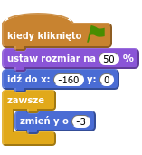
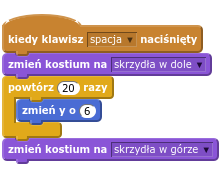
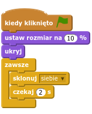
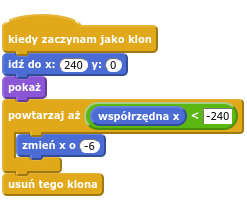
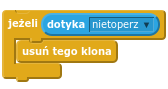
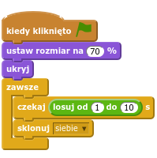
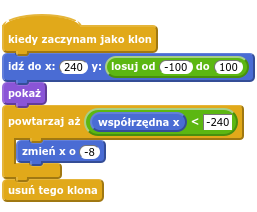
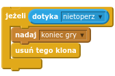
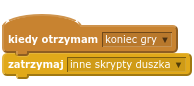

Wstęp
Na tej lekcji zrobimy grę, w której wystąpi nietoperz, lewitujące dynie i groźne duchy.
Tym razem nie zaczniemy od pustej sceny, tylko od zremiksowania istniejącego projektu zawierającego ruchome tło do gry:

Krok 1: Remiksujemy projekt
Zadania do wykonania
Upewnij się, że umiesz otwierać linki w osobnym oknie lub karcie. Następnie otwórz w nowym oknie lub nowej karcie następujący projekt:
https://scratch.mit.edu/projects/129214496/Zajrzyj do środka projektu.
Zaloguj się do scratcha, jeśli jeszcze tego nie zrobiłeś. Bez tego nie będziesz mógł zremiksować projektu.
Naciśnij żółty przycisk
Remix, na górze z prawej strony.
Świetnie! Kopia projektu jest już na Twoim koncie.
Projekt zawiera już dwa duszki: drzewa, które są używane do rysowania przesuwającego się tła, oraz dynię. Skrypt drzew jest skomplikowany, nie przejmuj się, jeśli niewiele z niego rozumiesz. Nie będziemy nic w nim zmieniać.
Krok 2: Dodajemy nietoperza
Dodaj duszka brązowego nietoperza, znajdziesz go w kategorii Zwierzęta.
Nazwij tego duszka „nietoperz”.
Dodaj do skryptu nietoperza następujące bloki:

Przetestuj swój projekt
Co dzieje się z nietoperzem po naciśnięciu flagi?
Zapisz swój projekt
Krok 3: Machamy skrzydłami
Jak widać, nietoperz nie jest zbyt dobry w szybowaniu. Może gdyby machał skrzydłami, łatwiej było by mu się utrzymać w powietrzu?
Zadania do wykonania
Nietoperz ma dwa kostiumy. Zmień ich nazwy na „skrzydła w górze” i „skrzydła w dole”.
Dodaj do skryptu nietoperza następujące bloki:

Przetestuj swój projekt
Naciskając spację pomóż nietoperzowi utrzymać wysokość.
Zapisz swój projekt
Krok 4: Dodajemy dynie
W tym kroku dodamy dynie, które nietoperz będzie mógł łapać. Duszek dyni jest już w projekcie, musisz tylko dodać do niego odpowiedni skrypt.
Zadania do wykonania
Przejdż do zakładki „Skrypty” duszka „dynia” i dodaj tam następujące bloki:


Przetestuj swój projekt
Dynie powinny pojawiać się regularnie z prawej strony ekranu i znikać po lewej stronie.
Zadania do wykonania
Spróbuj zrobić tak, żeby dynie pojawiały się na różnej wysokości, a nie jedna za drugą w połowie wysokości ekranu. Użyj takiego klocka:
Czy wiesz, gdzie go wstawić?
Przetestuj swój projekt
Teraz dynie powinny pojawiać się na różnej wysokości. Jest o wiele ciekawiej!
Zapisz swój projekt
Krok 5: Łapiemy dynie
Chcemy, żeby dynia znikała nie tylko gdy dotrze do lewej krawędzi, ale także gdy dotknie jej nietoperz.
Zadania do wykonania
Wewnątrz pętli
powtarzaj ażdodaj następujące bloki:
Przetestuj swój projekt
Czy dynie znikają kiedy dotknie jej nietoperz?
Zapisz swój projekt
Krok 6: Liczymy punkty
Gracz będzie dostawał punkty za każdą złapaną dynię i tracił je za każdą dynię, której nie złapie.
Zadania do wykonania
Utwórz nową zmienną
punktyZa każdym razem, kiedy dynia znika dotknięta przez nietoperza, zmienna
punktypowinna zwiększać się o 1. Użyj do tego bloku:Za każdym razem, kiedy dynia ucieka za lewą krawędź, zmienna
punktypowinna zmniejszać się o 1. Użyj do tego bloku:
Wskazówka: nowe bloki powinny znaleźć się w skrypcie dyni, tuż przed blokami usuń tego klona.
Przy każdym uruchomieniu gry licznik punktów powinien się zerować. Użyj bloku
Przetestuj swój projekt
Czy gracz dostaje punkty za złapane dynie i traci punkty za dynie, które uciekły?
Zapisz swój projekt
Krok 7: Dodajemy duchy
Żeby gra była ciekawsza, dodamy groźne duchy.
Zadania do wykonania
Dodaj nowego duszka, a właściwie ducha. Wybierz „Ghoula” z kategorii „Fikcja”.
Skrypt ducha będzie podobny do skryptu dyni. W zakładce „Skrypty” ducha dodaj następujące bloki:


Kiedy duch dotknie nietoperza, gra będzie się kończyć. Wstaw następujące bloki do wnętrza pętli
powtarzaj ażw skrypcie ducha:
Przetestuj swój projekt
Co dzieje się, gdy duch złapie nietoperza? Nie do końca o to nam chodziło…
Zapisz swój projekt
Na koniec gry musimy jeszcze zatrzymać nietoperza, a nowe dynie i duchy nie powinny się pojawiać.
Dodaj następujące bloki do skryptu nietoperza, dyni oraz ducha:

Przetestuj swój projekt
Upewnij się, że gra zatrzymuje się kiedy duch złapie nietoperza.